Límites de funciones
Análisis Matemático
El concepto de límite
El concepto de límite está ligado al de tendencia.
Dado un conjunto \(A\subseteq \mathbb{R}\), se dice que \(x\in A\) tiende a un número \(a\in\mathbb{R}\), y lo escribimos \(x\to a\), si se pueden tomar valores de \(x\) tan próximos a \(a\) como se quiera, pero sin llegar a valer \(a\).
Para que \(x\in A\) tienda a \(a\), es necesario que \(a\) sea un punto de acumulación de \(A\).
Si la aproximación es por defecto (con valores menores que \(a\)) se dice que \(x\) tiende a \(a\) por la izquierda, y se escribe \(x\to a^-\), y si es por exceso (con valores mayores que \(a\)) se dice que \(x\) tiende a \(a\) por la derecha, y se escribe \(x\to a^+\).
Cuando la variable \(x\) de una función \(f\) tiende a un valor \(a\), cabe preguntarse si sus imágenes mediante \(f\) tienden a otro valor concreto:
Si \(f(x)\) tiende a un valor \(l\) cuando \(x\) tiende a \(a\), se dice que \(l\) es el límite de \(f(x)\) cuando \(x\to a\), y se escribe
\[\lim_{x\to a}f(x)=l.\]
Límites laterales
Si \(f(x)\) tiende a \(l\) cuando \(x\) tiende a \(a\) por la izquierda, entonces se dice que \(l\) es el límite por la izquierda de \(f(x)\) cuando \(x\to a^-\), y se escribe
\[\lim_{x\to a^-}f(x)=l.\]
Si \(f(x)\) tiende a \(l\) cuando \(x\) se aproxima a \(a\) por exceso, entonces se dice que \(l\) es el límite por la derecha de \(f(x)\) cuando \(x\to a^-\), y se escribe
\[\lim_{x\to a^+}f(x)=l.\]
Ejemplo 1 Consideremos la función \(f(x)=x^2\) y veamos que pasa cuando \(x\to 2\):
\[ \begin{array}{c} \underbrace{\begin{array}{ccc} \textrm{Aproximación por defecto} & \qquad & \textrm{Aproximación por exceso}\\ \begin{array}{|l|l|} \hline x & f(x)=x^2 \\ \hline\hline 1.9 & 3.61 \\ \hline 1.99 & 3.9601 \\ \hline 1.999 & 3.996001 \\ \hline 1.9999 & 3.99960001 \\ \hline \end{array} & & \begin{array}{|l|l|} \hline x & f(x)=x^2 \\ \hline\hline 2.1 & 4.41 \\ \hline 2.01 & 4.0401 \\ \hline 2.001 & 4.004001 \\ \hline 2.0001 & 4.00040001 \\ \hline \end{array}\\ \Downarrow & & \Downarrow\\ \lim_{x\to 2^-}x^2=4 & & \lim_{x\to 2^+}x^2=4 \end{array}}\\ \Downarrow\\ \lim_{x\to 2}x^2=4 \end{array} \]
Límites que no existen
Si la función no está definida entorno a un punto, entonces no existe el límite en dicho punto.
Ejemplo 2 Consideremos la función \(f(x)=\dfrac{1}{\sqrt{x^2-1}}\) y veamos que pasa cuando \(x\to 0\):
\[ \begin{array}{c} \underbrace{\begin{array}{ccc} \textrm{Por la izquierda} & \qquad & \textrm{Por la derecha }\\ \begin{array}{|l|l|} \hline x & f(x) \\ \hline\hline -0.1 & \textrm{No exite} \\ \hline -0.01 & \textrm{No existe} \\ \hline -0.001 & \textrm{No existe} \\ \hline \end{array} & & \begin{array}{|l|l|} \hline x & f(x) \\ \hline\hline 0.1 & \textrm{No existe} \\ \hline 0.01 & \textrm{No existe} \\ \hline 0.001 & \textrm{No existe} \\ \hline \end{array}\\ \Downarrow & & \Downarrow\\ \displaystyle \textrm{No existe } \lim_{x\to 0^-}\frac{1}{\sqrt{x^2-1}} & & \displaystyle \textrm{No existe } \lim_{x\to 0^+}\frac{1}{\sqrt{x^2-1}} \end{array}}\\ \Downarrow\\ \displaystyle \textrm{No existe }\lim_{x\to 0}\frac{1}{\sqrt{x^2-1}} \end{array}\]
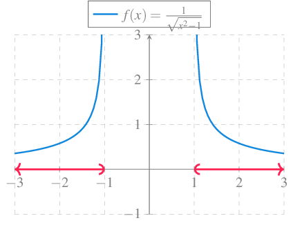
Cuando los límites laterales no coinciden entonces no existe el límite.
Ejemplo 3 Consideremos la función \(f(x)=\dfrac{\lvert x\rvert}{x}\) y veamos que pasa cuando \(x\to 0\):
\[\begin{array}{c} \underbrace{\begin{array}{ccc} \textrm{Por la izquierda} & \qquad & \textrm{Por la derecha }\\ \begin{array}{|l|l|} \hline x & f(x) \\ \hline\hline -0.1 & -1 \\ \hline -0.01 & -1 \\ \hline -0.001 & -1 \\ \hline \end{array} & & \begin{array}{|l|l|} \hline x & f(x) \\ \hline\hline 0.1 & 1 \\ \hline 0.01 & 1 \\ \hline 0.001 & 1 \\ \hline \end{array}\\ \Downarrow & & \Downarrow\\ \displaystyle \lim_{x\to 0^-}\frac{|x|}{x}=-1 &\neq & \displaystyle \lim_{x\to 0^+}\frac{|x|}{x}=1 \end{array}}\\ \Downarrow\\ \displaystyle \textrm{No existe }\lim_{x\to 0}\frac{|x|}{x} \end{array} \]
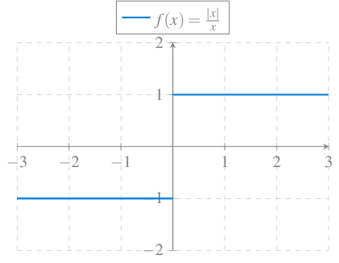
A veces, cuando \(x\to a\) los valores de \(f(x)\) crecen o decrecen infinitamente y entonces no existe el límite. En este caso se dice que la función diverge y se escribe
\[\lim_{x\to a}f(x)=\pm \infty.\]
Ejemplo 4 Veamos la tendencia de la función \(f(x)=\dfrac{1}{x^2}\) cuando \(x\to 0\):
\[ \begin{array}{c} \underbrace{\begin{array}{ccc} \textrm{Por la izquierda} & \qquad & \textrm{Por la derecha }\\ \begin{array}{|l|r|} \hline x & f(x) \\ \hline\hline -0.1 & 100 \\ \hline -0.01 & 10000 \\ \hline -0.001 & 1000000 \\ \hline \end{array} & & \begin{array}{|l|r|} \hline x & f(x) \\ \hline\hline 0.1 & 100 \\ \hline 0.01 & 10000 \\ \hline 0.001 & 1000000 \\ \hline \end{array}\\ \Downarrow & & \Downarrow\\ \displaystyle \lim_{x\to 0^-}\frac{1}{x^2}=+\infty & & \displaystyle \lim_{x\to 0^+}\frac{1}{x^2}=+\infty \end{array}}\\ \Downarrow\\ \displaystyle \textrm{No existe }\lim_{x\to 0}\frac{1}{x^2}=\infty \end{array} \]
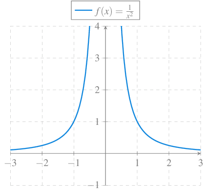
A veces, el límite de un función en un punto puede no existir porque la función oscila rápidamente al acercarnos a dicho punto.
Ejemplo 5 Consideremos la función \(f(x)=\operatorname{sen} \dfrac{1}{x}\) y veamos que pasa cuando \(x\to 0\):
\[ \begin{array}{c} \underbrace{\begin{array}{ccc} \textrm{Por la izquierda} & \qquad & \textrm{Por la derecha }\\ \begin{array}{|l|l|} \hline x & f(x) \\ \hline\hline -0.1 & -0.1736 \\ \hline -0.01 & -0.9848 \\ \hline -0.005 & 0.3420 \\ \hline -0.001 & 0.9848 \\ \hline -0.0005 & 0.3420\\ \hline -0.0001 & 0.9848 \\ \hline \end{array} & & \begin{array}{|l|l|} \hline x & f(x) \\ \hline\hline 0.1 & 0.1736 \\ \hline 0.01 & 0.9848 \\ \hline 0.005 & -0.3420 \\ \hline 0.001 & -0.9848 \\ \hline 0.0005 & -0.3420\\ \hline 0.0001 & -0.9848 \\ \hline \end{array}\\ \Downarrow & & \Downarrow\\ \displaystyle \textrm{No existe }\lim_{x\to 0^-}\operatorname{sen} \frac{1}{x} & & \displaystyle \textrm{No existe }\lim_{x\to 0^+}\operatorname{sen} \frac{1}{x} \end{array}}\\ \Downarrow\\ \displaystyle \textrm{No existe }\lim_{x\to 0}\operatorname{sen} \frac{1}{x} \end{array} \]
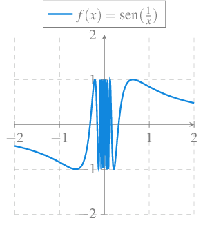
Límites en el infinito
Si \(f(x)\) tiende a \(l\) cuando \(x\) crece infinitamente, entonces se dice que \(l\) es el límite en el infinito de \(f(x)\) cuando \(x\to +\infty\), y se escribe
\[\lim_{x\to +\infty}f(x)=l.\]
Si \(f(x)\) tiende a \(l\) cuando \(x\) decrece infinitamente, entonces se dice que \(l\) es el límite en el infinito de \(f(x)\) cuando \(x\to -\infty\), y se escribe
\[\lim_{x\to -\infty}f(x)=l.\]
Ejemplo 6 Estudiemos la tendencia de \(f(x)=\dfrac{1}{x}\) cuando \(x\to \pm\infty\):
\[ \begin{array}{ccc} x\to +\infty & \qquad & x\to -\infty\\ \begin{array}{|r|l|} \hline x & f(x)=1/x \\ \hline\hline 1000 & 0.001 \\ \hline 10000 & 0.0001 \\ \hline 100000 & 0.00001 \\ \hline \end{array} & & \begin{array}{|r|l|} \hline x & f(x)=1/x \\ \hline\hline -1000 & -0.001 \\ \hline -10000 & -0.0001 \\ \hline -100000 & -0.00001 \\ \hline \end{array}\\ \Downarrow & & \Downarrow\\ \lim_{x\to +\infty}\frac{1}{x}=0 & & \lim_{x\to -\infty}\frac{1}{x}=0 \end{array} \]
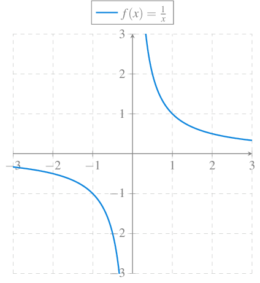
Definición de límite
Definición 1 (Límite de una función en un punto) Dado un conjunto \(A\subseteq \mathbb{R}\), una función \(f:A\to \mathbb{R}\) y un punto de acumulación \(a\) de \(A\), se dice que \(l\in\mathbb{R}\) es el límite de \(f\) en \(a\) y se escribe
\[\lim_{x\to a} f(x) = l\]
si para cualquier número \(\varepsilon>0\) existe un número \(\delta>0\) tal que \(|f(x)-l|<\varepsilon\) \(\forall x\in A\setminus\{a\}\) con \(|x-a|<\delta\).
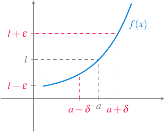
Ejemplo 7 Sea \(f(x)=x^2\). Veamos que \(\lim_{n\to a}f(x)=a^2\). Para ello, dado cualquier \(\varepsilon>0\) se puede tomar \(\delta=\min\{1,\frac{\varepsilon}{1+2|a|}\}>0\) de manera \(\forall x\neq a\) si \(|x-a|<\delta\), entonces \(|x-a|<1\) y, por tanto, \(|x+a|=|x-a+2a|\leq |x-a|+2|a|<1+2|a|\), y además, \[\begin{align*} |f(x)-a^2| &= |x^2-a^2| = |(x+a)(x-a)| =|x+a||x-a| \\ &< (1+2|a|)\delta < (1+2|a|)\frac{\varepsilon}{1+2|a|} = \varepsilon. \end{align*}\]
Teorema 1 (Unicidad del límite) Dado un conjunto \(A\subseteq \mathbb{R}\), una función \(f:A\to \mathbb{R}\) y un punto de acumulación \(a\) de \(A\), si existe el límite de \(f\) en \(a\), entonces es único.
Teorema 2 (Criterio de las sucesiones) Dado un conjunto \(A\subseteq \mathbb{R}\), una función \(f:A\to \mathbb{R}\) y un punto de acumulación \(a\) de \(A\), se cumple que \(\lim_{x\to a}f(x)=l\) si y solo si para cualquier sucesión \((x_n)_{n=1}^\infty\) en \(A\setminus\{a\}\) que converge a \(a\), se tiene que \((f(x_n))_{n=1}^\infty\) converge a \(l\).
Este criterio se puede utilizar tanto para demostrar que un número es el límite de una función en un punto como, para demostrar que no lo es.
Ejemplo 8 Sea \(f(x)=\frac{1}{x}\) \(\forall x\neq 0\) y sea \(a\neq 0\). Entonces, para cualquier sucesión \((x_n)_{n=1}^\infty\) convergente a \(a\) con \(x_n\neq 0\) \(\forall n\in\mathbb{N}\), se tiene
\[ \lim_{n\to\infty}f(x_n)=\lim_{n\to\infty}\frac{1}{x_n}= \frac{\lim_{n\to\infty}1}{\lim_{n\to\infty}x_n} = \frac{1}{a}, \]
por lo que, aplicando el criterio anterior se tiene \(\lim_{x\to a}f(x) = \frac{1}{a}\).
Del mismo modo, si \(a=0\), tomando la sucesión \(\left(\frac{1}{n}\right)_{n=1}^\infty\) que converge a \(0\), \(\lim_{n\to\infty}f\left(\frac{1}{n}\right) = \lim_{n\to\infty}n=\infty\), por lo que no existe \(\lim_{x\to 0}f(x)\).
Ejemplo 9 Sea \(f(x)=\operatorname{sen}\left(\frac{1}{x}\right)\) \(\forall x\neq 0\). Tomando la sucesión \(\left(\frac{1}{n\pi}\right)_{n=1}^\infty\), que converge a \(0\), se tiene que
\[ \lim_{n\to\infty}f\left(\frac{1}{n\pi}\right) = \lim_{n\to\infty}\operatorname{sen}\left(\frac{1}{\frac{1}{n\pi}}\right) = \lim_{n\to\infty}\operatorname{sen}(n\pi) = 0. \]
Y tomando la sucesión \(\left(\frac{1}{2n\pi+\pi/2}\right)_{n=1}^\infty\), que también converge a \(0\), se tiene que
\[ \lim_{n\to\infty}f\left(\frac{1}{2n\pi+\pi/2}\right) = \lim_{n\to\infty}\operatorname{sen}\left(\frac{1}{\frac{1}{2n\pi+\pi/2}}\right) = \lim_{n\to\infty}\operatorname{sen}(2n\pi+\pi/2) = 1. \]
Por tanto, el límite de la función aplicada a estas dos sucesiones es distinto, y por el criterio anterior, no existe el límite de \(f\) en \(0\).
Definición 2 (Función acotada en un entorno de un punto) Dado un conjunto \(A\subseteq \mathbb{R}\), una función \(f:A\to \mathbb{R}\) y un punto de acumulación \(a\) de \(A\), se dice que \(f\) está acotada en el entorno de \(a\) si existe un \(\delta>0\) y un \(c>0\) tal que \(|f(x)|<c\) \(\forall x\in A\) con \(|x-a|<\delta\).
Definición 3 (Función acotada) Dado un conjunto \(A\subseteq \mathbb{R}\), una función \(f:A\to \mathbb{R}\), se dice que \(f\) está acotada en \(A\), si existe un \(c>0\) tal que \(|f(x)|\leq c\) \(\forall x\in A\).
Proposición 1 Dado un conjunto \(A\subseteq \mathbb{R}\), una función \(f:A\to \mathbb{R}\) y un punto de acumulación \(a\) de \(A\), si existe el límite de \(f\) en \(a\), entonces \(f\) está acotada en un entorno de \(a\).
Ejemplo 10 La función \(f(x)=\frac{1}{x}\) no está acotada en un entorno de \(0\), por lo que no existe el límite de \(f\) en \(0\).
Álgebra de límites
Proposición 2 Dado un conjunto \(A\subseteq \mathbb{R}\), dos funciones \(f,g:A\to \mathbb{R}\) y un punto de acumulación \(a\) de \(A\), tales que existe \(\lim_{x\to a}f(x)\) y \(\lim_{x\to a}g(x)\), entonces se cumple que
\(\lim_{x\to a}c f(x)=c\lim_{x\to a}f(x)\), \(\forall c\in\mathbb{R}\).
\(\lim_{x\to a}(f(x)\pm g(x))=\lim_{x\to a}f(x)\pm \lim_{x\to a}g(x).\)
\(\lim_{x\to a}(f(x)\cdot g(x))=\lim_{x\to a}f(x)\cdot \lim_{x\to a}g(x).\)
Si \(g(x)\neq 0\) \(\forall x\in A\) y \(\lim_{x\to a}g(x)\neq 0\), entonces \(\lim_{x\to a}\dfrac{f(x)}{g(x)}=\frac{\displaystyle \lim_{x\to a}f(x)}{\displaystyle \lim_{x\to a}g(x)}\).
Ejemplo 11 Sea \(f(x)=x^3+x^2-2x-1\), entonces
\[\begin{align*} \lim_{x\to 2}f(x) &= \lim_{x\to 2}x^3+x^2-2x-1\\ &= \lim_{x\to 2}x^3 + \lim_{x\to 2}x^2 - \lim_{x\to 2} 2x - \lim_{x\to 2} 1\\ &= 2^3 + 2^2 -2*2 -1 = 7. \end{align*}\]
Sea ahora \(g(x)=\frac{x^2-4}{3x-6}\), entonces
\[\begin{align*} \lim_{x\to 2}g(x) &= \lim_{x\to 2}\frac{x^2-4}{3x-6} = \lim_{x\to 2}\frac{(x+2)(x-2)}{3(x-2)}\\ &= \lim_{x\to 2}\frac{x+2}{3} =\frac{\lim_{x\to 2}x+\lim_{x\to 2}2}{\lim_{x\to 2}3} \tag{$x\neq 2$} \\ &= \frac{2+2}{3}=\frac{4}{3}. \end{align*}\]
Teorema 3 (Compresión de funciones) Dado un conjunto \(A\subseteq \mathbb{R}\), tres funciones \(f,g,h:A\to \mathbb{R}\) y un punto de acumulación \(a\) de \(A\), si \(f(x)\leq g(x)\leq h(x)\) \(\forall x\in A\) y \(\lim_{x\to a}f(x)=\lim_{x\to a}h(x)=l\), entonces \(\lim_{x\to a}g(x)=l\).
Ejemplo 12 Sea \(f(x)=x\operatorname{sen}\left(\frac{1}{x}\right)\) \(\forall x\neq 0\). Entonces \(0\leq \left|x\operatorname{sen}\left(\frac{1}{x}\right)\right|\leq |x|\) \(\forall x\neq 0\). Como \(\lim_{x\to 0}|x| = 0\), aplicando el teorema de compresión de funciones se tiene que \(\lim_{x\to 0} \left|x\operatorname{sen}\left(\frac{1}{x}\right)\right|=0\) y por tanto \(\lim_{x\to 0} x\operatorname{sen}\left(\frac{1}{x}\right)=0\).
Teorema 4 (Límite de la composición de funciones) Dados dos conjuntos \(A,B\subseteq \mathbb{R}\), dos funciones \(f:A\to \mathbb{R}\), \(g:B\to \mathbb{R}\) tales que \(f(A)\subseteq B\), un punto de acumulación \(a\) de \(A\) y un punto de acumulación \(b\) de \(B\), si \(\lim_{x\to a}f(x)=b\) y \(\lim_{x\to b}g(x)=l\), entonces \(\lim_{x\to a}g\circ f(x)=l\).
Ejemplo 13 Si tomamos las funciones \(f(x)=x^2-5\) y \(g(y)=\sqrt{y}\), se cumple que \(\lim_{x\to 3}f(x)=4\) y \(\lim_{y\to 4}g(y)=2\). Entonces, aplicando el teorema anterior se tiene
\[ \lim_{x\to 3}g\circ f(x)=\lim_{x\to 3}\sqrt{x^2-5} = \lim_{y\to 4} \sqrt{y} = 2. \]
Proposición 3 Dado un conjunto \(A\subseteq \mathbb{R}\), una función \(f:A\to \mathbb{R}\) y un punto de acumulación \(a\) de \(A\), si existe el límite de \(f\) en \(a\) entonces \(\lim_{x\to a}|f(x)|=|\lim_{x\to a}f(x)|\).
Proposición 4 Dado un conjunto \(A\subseteq \mathbb{R}\), una función \(f:A\to \mathbb{R}\) y un punto de acumulación \(a\) de \(A\), si existe el límite de \(f\) en \(a\) entonces \(\lim_{x\to a}\sqrt{f(x)}=\sqrt{\lim_{x\to a}f(x)}\).
Teorema 5 (Criterio de Cauchy) Dado un conjunto \(A\subseteq \mathbb{R}\), una función \(f:A\to \mathbb{R}\) y un punto de acumulación \(a\) de \(A\), entonces \(\lim_{x\to a}f(x)=l\) si y solo si para cualquier \(\varepsilon>0\) existe un \(\delta>0\) tal que \(|f(x)-f(y)|<\varepsilon\) \(\forall x,y\in A\setminus\{a\}\) con \(|x-a|<\delta|\) y \(|y-a|<\delta\).
Límites laterales
Definición 4 Dado un conjunto \(A\subseteq \mathbb{R}\) y una función \(f:A\to \mathbb{R}\),
Si \(a\) es un punto de acumulación de \(\{x\in A: x>a\}\), se dice que \(l\) es el límite por la derecha de \(f\) en \(a\) y se denota \(\lim_{x\to a^+}f(x)=l\), si para cualquier \(\varepsilon>0\) existe \(\delta>0\) tal que \(|f(x)-l|<\varepsilon\) \(\forall x\in A\) con \(0<x-a<\delta\).
Si \(a\) es un punto de acumulación de \(\{x\in A: x<a\}\), se dice que \(l\) es el límite por la izquierda de \(f\) en \(a\) y se denota \(\lim_{x\to a^-}f(x)=l\), si para cualquier \(\varepsilon>0\) existe \(\delta>0\) tal que \(|f(x)-l|<\varepsilon\) \(\forall x\in A\) con \(0<a-x<\delta\).
Teorema 6 (Límites laterales) Dado un conjunto \(A\subseteq \mathbb{R}\) y una función \(f:A\to \mathbb{R}\), y sea \(a\) un punto de acumulación de los conjuntos \(\{x\in A: x>a\}\) y \(\{x\in A: x<a\}\), entonces \(\lim_{x\to a}f(x)=l\) si y solo si \(\lim_{x\to a^+}f(x)=\lim_{x\to a^-}f(x)=l\).
Ejemplo 14 Sea
\[ f(x)=\frac{|x|}{x}= \begin{cases} -1 & \mbox{si } x<0\\ 1 & \mbox{si } x>0 \end{cases} \]
Entonces, \(\lim_{x\to 0^-}f(x)=-1\) y \(\lim_{x\to 0^+}f(x)=1\), y como los límites son distintos, por el teorema anterior, se tiene que no existe el límite de la función en \(0\).
Límites infinitos
Definición 5 (Límite infinito) Dado un conjunto \(A\subseteq \mathbb{R}\) y una función \(f:A\to \mathbb{R}\), y sea \(a\) un punto de acumulación de \(A\):
Se dice que \(f\) tiende a \(\infty\) cuando \(x\) tiende a \(a\), y se denota \(\lim_{x\to a}f(x)=\infty\), si para cada \(\varepsilon>0\) existe un \(\delta>0\) tal que \(f(x)>\varepsilon\) \(\forall x\in A\setminus\{a\}\) con \(|x-a|<\delta\).
Se dice que \(f\) tiende a \(-\infty\) cuando \(x\) tiende a \(a\), y se denota \(\lim_{x\to a}f(x)=-\infty\), si para cada \(\varepsilon<0\) existe un \(\delta>0\) tal que \(f(x)<\varepsilon\) \(\forall x\in A\setminus\{a\}\) con \(|x-a|<\delta\).
Ejemplo 15 Sea \(f(x)=\frac{1}{x^2}\). Dado \(\varepsilon>0\), tomando \(\delta=\frac{1}{\sqrt{\varepsilon}}>0\), se tiene que si \(0<|x|<\delta=\frac{1}{\sqrt{\varepsilon}}\) entonces
\[ f(x)=\frac{1}{x^2}> \frac{1}{\left(\frac{1}{\sqrt{\varepsilon}}\right)^2} = \varepsilon. \] Por tanto, \(\lim_{x\to 0}f(x)=\infty\).
Proposición 5 Dado un conjunto \(A\subseteq \mathbb{R}\), un punto de acumulación \(a\) de \(A\) y dos funciones \(f,g:A\to \mathbb{R}\) tales que \(f(x)\leq g(x)\) \(\forall x\in A\setminus\{a\}\):
Si \(\lim_{x\to a}f(x)=\infty\) entonces \(\lim_{x\to a}g(x)=\infty\).
Si \(\lim_{x\to a}g(x)=-\infty\) entonces \(\lim_{x\to a}f(x)=-\infty\).
Límites en el infinito
Definición 6 (Límite de una función en el infinito) Dado un conjunto \(A\subseteq \mathbb{R}\) tal que \((a,\infty)\subset A\) para algún \(a\in\mathbb{R}\), y una función \(f:A\to \mathbb{R}\), se dice que \(f\) tiende a \(l\) cuando \(x\) tiende \(\infty\), y se denota \(\lim_{x\to\infty}f(x)=l\), si para cada \(\varepsilon>0\) existe \(\delta>a\) tal que \(|f(x)-l|<\varepsilon\) \(\forall x>\delta\).
Y dado un conjunto \(B\subseteq \mathbb{R}\) tal que \((-\infty,b)\subset B\) para algún \(b\in\mathbb{R}\), y una función \(g:B\to \mathbb{R}\), se dice que \(g\) tiende a \(l\) cuando \(x\) tiende \(-\infty\), y se denota \(\lim_{x\to-\infty}g(x)=l\), si para cada \(\varepsilon>0\) existe \(\delta<b\) tal que \(|f(x)-l|<\varepsilon\) \(\forall x<\delta\).
Ejemplo 16 Sea \(f(x)=\frac{1}{x}\) \(\forall x\neq 0\). Veamos que \(\lim_{x\to\infty}f(x)=0\). Dado \(\varepsilon>0\) existe \(\delta=\frac{1}{\varepsilon}>0\) tal que si \(x>\delta=\frac{1}{\varepsilon}\) se tiene \(|f(x)-0|=|f(x)| = \left|\frac{1}{x}\right|<\varepsilon\).
Del mismo modo se puede probar que \(\lim_{x\to -\infty}f(x)=0\).
Teorema 7 (Criterio de las sucesiones divergentes) Dado un conjunto \(A\subseteq \mathbb{R}\) tal que \((a,\infty)\subset A\) para algún \(a\in\mathbb{R}\), y una función \(f:A\to \mathbb{R}\), entonces \(\lim_{x\to\infty}f(x)=l\) si y solo si para cualquier sucesión \((x_n)_{n=1}^\infty\) en \((a,\infty)\) que diverja a \(\infty\), \(\lim_{n\to\infty}f(x_n)=l\).
Definición 7 (Límite infinito en el infinito) Dado un conjunto \(A\subseteq \mathbb{R}\) tal que \((a,\infty)\subset A\) para algún \(a\in\mathbb{R}\), y una función \(f:A\to \mathbb{R}\), se dice que \(f\) tiende a \(\infty\) cuando \(x\) tiende \(\infty\), y se denota \(\lim_{x\to\infty}f(x)=\infty\), si para cada \(\varepsilon>0\) existe \(\delta>a\) tal que \(f(x)>\varepsilon\) \(\forall x>\delta\).
Y dado un conjunto \(B\subseteq \mathbb{R}\) tal que \((-\infty,b)\subset B\) para algún \(b\in\mathbb{R}\), y una función \(g:B\to \mathbb{R}\), se dice que \(g\) tiende a \(\infty\) cuando \(x\) tiende \(-\infty\), y se denota \(\lim_{x\to-\infty}g(x)=\infty\), si para cada \(\varepsilon>0\) existe \(\delta<b\) tal que \(f(x)<\varepsilon\) \(\forall x<\delta\).
Ejemplo 17 Sea \(f(x)=x^2\). Veamos que \(\lim_{x\to\infty}f(x)=\infty\). Dado \(\varepsilon>0\) existe \(\delta=\sqrt{\varepsilon}>0\) tal que si \(x>\delta\), entonces \(f(x)=x^2>(\sqrt{\varepsilon})^2 =\varepsilon\).
Del mismo modo se puede probar que \(\lim_{x\to-\infty}f(x)=\infty\).
Proposición 6 Dado un conjunto \(A\subseteq \mathbb{R}\) tal que \((a,\infty)\subset A\) para algún \(a\in\mathbb{R}\), y dos funciones \(f,g:A\to \mathbb{R}\), tales que \(g(x)>0\) \(\forall x\in A\) y \(\lim_{x\to\infty}\frac{f(x)}{g(x)}=l\), entonces:
Si \(l>0\), \(\lim_{x\to\infty}f(x)=\infty\) si y solo si \(\lim_{x\to\infty}g(x)=\infty\).
Si \(l<0\), \(\lim_{x\to\infty}f(x)=-\infty\) si y solo si \(\lim_{x\to\infty}g(x)=\infty\).
Límites de las funciones elementales
Proposición 7 (Límite de una función polinómica) Si \(f\) es una función polinómica, entonces existe el límite de \(f\) en cualquier punto \(a\in \mathbb{R}\) y \(\lim_{x\to a}f(x)=f(a)\).
Proposición 8 (Límite de una función racional) Si \(f(x)=\dfrac{p(x)}{q(x)}\) con \(p(x)\) y \(q(x)\) funciones polinómicas, entonces existe el límite de \(f\) en cualquier punto \(a\in \mathbb{R}\) que no sea una raíz de \(q(x)\), y \(\lim_{x\to a}f(x)=f(a)\).
Si \(a\) es una raíz de \(q(x)\) entonces el límite puede existir o no.
Proposición 9 (Límite de una función potencial) Si \(f(x)=x^r\) con \(r\in \mathbb{R}\), entonces existe el límite de \(f\) en cualquier punto \(a\) tal que exista un intervalo \((a-\delta,a+\delta)\subset \textrm{Dom}(f)\) para algún \(\delta >0\), y en ese caso, \(\lim_{x\to a}f(x)=f(a)\).
Proposición 10 (Límite de una función exponencial) Si \(f(x)=c^x\) con \(c\in \mathbb{R}\) entonces existe el límite de \(f\) en cualquier punto \(a\in \mathbb{R}\) y \(\lim_{x\to a}f(x)=f(a)\).
Proposición 11 (Límite de una función logarítmica) Si \(f(x)=\log_c(x)\) con \(c\in \mathbb{R}\), entonces existe el límite de \(f\) en cualquier punto \(a\in \mathbb{R}^+\) y \(\lim_{x\to a}f(x)=f(a)\).
Proposición 12 (Límite de una función trigonométrica) Si \(f(x)\) es una función trigonométrica, entonces existe el límite de \(f\) en cualquier punto \(a\in \textrm{Dom}(f)\) y \(\lim_{x\to a}f(x)=f(a)\).
Indeterminaciones
Al calcular límites pueden aparecer las siguientes indeterminaciones:
Tipo cociente. Si \(\lim_{x\to a} f(x)=0\) y \(\lim_{x\to a} g(x)=0\), entonces \(\dfrac{f(x)}{g(x)}\) presenta una indeterminación del tipo \(\dfrac{0}{0}\) cuando \(x\to a\).
Si \(\lim_{x\to a} f(x)=\pm\infty\) y \(\lim_{x\to a} g(x)=\pm\infty\), entonces \(\dfrac{f(x)}{g(x)}\) presenta una indeterminación del tipo \(\pm\dfrac{\infty}{\infty}\) cuando \(x\to a\).
Tipo producto. Si \(\lim_{x\to a} f(x)=0\) y \(\lim_{x\to a} g(x)=\pm\infty\), entonces \(f(x)\cdot g(x)\) presenta una indeterminación del tipo \(0\cdot \pm\infty\) cuando \(x\to a\).
Tipo potencia. Si \(\lim_{x\to a} f(x)=1\) y \(\lim_{x\to a} g(x)=\infty\), entonces \(f(x)^{g(x)}\) presenta una indeterminación del tipo \(1^\infty\) cuando \(x\to a\).
Si \(\lim_{x\to a} f(x)=0\) y \(\lim_{x\to a} g(x)=0\), entonces \(f(x)^{g(x)}\) presenta una indeterminación del tipo \(0^0\) cuando \(x\to a\).
Si \(\lim_{x\to a} f(x)=\infty\) y \(\lim_{x\to a} g(x)=0\), entonces \(f(x)^{g(x)}\) presenta una indeterminación del tipo \(\infty^0\) cuando \(x\to a\).
Tipo diferencia. Si \(\lim_{x\to a} f(x)=\infty\) y \(\lim_{x\to a} g(x)=\infty\), entonces \(f(x)-g(x)\) presenta una indeterminación del tipo \(\infty-\infty\) cuando \(x\to a\).
Resolución de una indeterminación de tipo cociente
Existen diferentes técnicas para resolver una indeterminación del tipo \(\dfrac{0}{0}\) o \(\dfrac{\infty}{\infty}\):
- Factorización de polinomios en funciones racionales.
- División por el términos de mayor orden en funciones racionales.
- Infinitésimos equivalentes.
- Regla de L’Hôpital.
Factorización de polinomios en funciones racionales
Si \(f(x)=\dfrac{p(x)}{q(x)}\) es una función racional que presenta una indeterminación de tipo cociente cuando \(x\to a\), y \(a\) es una raíz de \(p(x)\) y \(q(x)\), se puede resolver la indeterminación factorizando los polinomios y simplificando.
Ejemplo 18 La función \(f(x)=\dfrac{x^3-3x+2}{x^4-4x+3}\to \dfrac{0}{0}\) cuando \(x\to 1\).
Para resolver la indeterminación factorizamos los polinomios
\[\begin{align*} x^3-3x+2 &= (x+2)(x-1)^2,\\ x^4-4x+3 &= (x^2+2x+3)(x-1)^2. \end{align*}\]
Como el factor \((x-1)^2\) es común, podemos simplificar la función en el cálculo del límite:
\[ \lim_{x\to 1}\frac{x^3-3x+2}{x^4-4x+3} = \lim_{x\to 1}\frac{(x+2)(x-1)^2}{(x^2+2x+3)(x-1)^2} = \lim_{x\to 1}\frac{(x+2)}{(x^2+2x+3)} =\frac{3}{6}=0.5. \]
División por el término de mayor orden en funciones racionales
Si \(f(x)=\dfrac{p(x)}{q(x)}\) es una función racional que presenta una indeterminación de tipo cociente cuando \(x\to \pm\infty\), entonces se puede resolver dividendo \(p(x)\) y \(q(x)\) por el término de mayor grado de ambos polinomios.
Ejemplo 19 La función \(f(x)=\dfrac{x^3-3x+2}{x^4-4x+3}\to \dfrac{\infty}{\infty}\) cuando \(x\to \infty\).
Para resolver la indeterminación dividimos numerador y denominador por \(x^4\) que es el término de mayor grado:
\[ \lim_{x\to \infty}\frac{x^3-3x+2}{x^4-4x+3} = \lim_{x\to \infty}\frac{\frac{x^3-3x+2}{x^4}}{\frac{x^4-4x+3}{x^4}} = \lim_{x\to \infty}\frac{\frac{1}{x}-\frac{3}{x^3}+\frac{2}{x^4}}{1-\frac{4}{x^3}+\frac{3}{x^4}} =\frac{0}{1}=0 \]
En general, si \(f(x)=\dfrac{a_0+a_1x+\cdots + a_nx^n}{b_0+b_1x+\cdots + b_mx^m}\), entonces:
- Si \(n>m\) entonces \(\lim_{x\to \pm \infty}f(x)=\pm\infty\).
- Si \(n<m\) entonces \(\lim_{x\to \pm \infty}f(x)=0\).
- Si \(n=m\) entonces \(\lim_{x\to \pm \infty}f(x)=\dfrac{a_n}{b_m}\).
Cambio de variable
El teorema del límite de la composición de funciones nos permite calcular límites haciendo un cambio de variable por medio de la composición de funciones.
Ejemplo 20 Sea \(f(x)=\frac{(x+8)^{1/3}-2}{x}\). Cuando \(x\to 0\), \(f(x)\to \frac{0}{0}\). Aplicando el cambio de variable \(y=(x+8)^{1/3}\), se tiene que \(y^3=x+8\) y \(x=y^3-8\). Como \(\lim_{x\to 0}(x+8)^{1/3}=2\), aplicando el teorema del límite de la composición de funciones, se tiene que
\[\begin{align*} \lim_{x\to 0} \frac{(x+8)^{1/3}-2}{x} &= \lim_{y\to 2}\frac{y-2}{y^3-8} = \lim_{y\to 2}\frac{y-2}{(y-2)(y^2+2y+4)} \\ &= \lim_{y\to 2} \frac{1}{y^2+2y+4} = \frac{2}{12}. \end{align*}\]
Infinitésimos equivalentes
Definición 8 Dado un conjunto \(A\subseteq \mathbb{R}\), una función \(f:A\to \mathbb{R}\), y un punto de acumulación \(a\) de \(A\), se dice que \(f\) es un infinitésimo en \(a\) si \(\lim_{x\to a}f(x)=0\).
De manera informal, se puede decir que un infinitésimo es una cantidad infinitamente pequeña.
Ejemplo 21 La función identidad \(f(x)=x\) es un infinitésimo en \(x=0\), ya que \(\lim_{x\to 0}x = 0\).
Del mismo modo, la función \(g(x)=\operatorname{sen}(x)\) es otro infinitésimo en \(x=0\) ya que \(\lim_{x\to 0}\operatorname{sen}(x)=0\).
Y la función \(h(x)=x^2-4\) es un infinitésimo en \(x=2\), ya que \(\lim_{x\to 2}x^2-4 = 0\).
Proposición 13 (Propiedades de los infinitésimos) Dado un conjunto \(A\subseteq \mathbb{R}\), dos funciones \(f,g:A\to \mathbb{R}\), y un punto de acumulación \(a\) de \(A\), tales que \(f\) y \(g\) son infinitésimos en \(a\). Entonces se cumple
- \(f+g\) es un infinitésimo en \(a\).
- \(f\cdot g\) es un infinitésimo en \(a\).
- \(c\cdot f\) es un infinitésimo en \(a\) \(\forall c\in\mathbb{R}\).
- Si \(h\) es una función acotada en un entorno de \(a\), \(f\cdot h\) es un infinitésimo en \(a\).
Definición 9 (Infinitésimos equivalentes) Dado un conjunto \(A\subseteq \mathbb{R}\), dos funciones \(f,g:A\to \mathbb{R}\), y un punto de acumulación \(a\) de \(A\), tales que \(f\) y \(g\) son infitésimos en \(a\), se dice que \(f\) y \(g\) son infinitésimos equivalentes en \(a\), se denota \(f(x)\approx g(x)\) cuando \(x\to a\), si
\[\lim_{x\to a}\frac{f(x)}{g(x)}=1.\]
Si \(f(x)\approx g(x)\) cuando \(x\to a\) entonces \(f(x)\) y \(g(x)\) son magnitudes equivalentes cuando \(x\to a\).
Ejemplo 22 Los siguientes infinitésimos equivalentes cuando \(x\to 0\):
\[ \begin{array}{c} \operatorname{sen}(x) \approx x \approx \operatorname{tg}(x)\\ 1-\cos(x) \approx \dfrac{x^2}{2}\\ \operatorname{arctg}(x) \approx x\\ e^x-1 \approx x\\ \log(1+x) \approx x\\ \end{array} \]
A veces se puede resolver una indeterminación cuando \(x\to a\) sustituyendo cualquier subexpresión de la función por un infinitésimo equivalente cuando \(x\to a\).
Ejemplo 23 La función \(f(x)=\dfrac{\operatorname{sen}(x)(1- \cos(x))}{x^3}\to \dfrac{0}{0}\) cuando \(x\to 0\).
Como \(\operatorname{sen}(x) \approx x\) y \(1-\cos(x)\approx \dfrac{x^2}{2}\) cuando \(x\to 0\), para resolver la indeterminación sustituimos \(\operatorname{sen}(x)\) por \(x\) y \(1-\cos(x)\) por \(\dfrac{x^2}{2}\):
\[\begin{align*} \lim_{x\to 0}\frac{\operatorname{sen}(x)(1- \cos (x))}{x^3}&= \lim_{x\to 0}\dfrac{x\frac{x^2}{2}}{x^3} = \lim_{x\to 0}\dfrac{\frac{x^3}{2}}{x^3} = \lim_{x\to 0}\dfrac{1}{2} =0.5. \end{align*}\]
Regla de L’Hôpital
Teorema 8 (Regla de L’Hôpital) Dado un conjunto \(A\subseteq \mathbb{R}\), dos funciones \(f,g:A\to \mathbb{R}\), y un punto de acumulación \(a\) de \(A\), tales que \(\dfrac{f(x)}{g(x)}\to \dfrac{0}{0}\) o \(\dfrac{\infty}{\infty}\) cuando \(x\to a\), entonces si existe \(\lim_{x\to a}\dfrac{f'(x)}{g'(x)}\) se cumple que
\[ \lim_{x\to a}\frac{f(x)}{g(x)}=\lim_{x\to a}\frac{f'(x)}{g'(x)}. \]
Para que exista \(\lim_{x\to a}\dfrac{f'(x)}{g'(x)}\) es necesario que que \(f\) y \(g\) sean derivables en un entorno de \(a\).
Ejemplo 24 Sea \(f(x)=\dfrac{\log(x^2-1)}{x+2}\to \dfrac{\infty}{\infty}\) cuando \(x\to \infty\).
Para resolver la indeterminación aplicamos la regla de L’Hôpital:
\[\begin{align*} \lim_{x\to \infty}\frac{\log(x^2-1)}{x+2} &= \lim_{x\to \infty}\frac{\left(\log(x^2-1)\right)'}{\left(x+2\right)'}= \lim_{x\to \infty}\frac{\frac{2x}{x^2-1}}{1}=\\ &=\lim_{x\to \infty}\frac{2x}{x^2-1}= \lim_{x\to \infty}\frac{\left(2x\right)'}{\left(x^2-1\right)'}= \lim_{x\to \infty}\frac{2}{2x}=0. \end{align*}\]
Resolución de una indeterminación de tipo producto
Si \(f(x)\to 0\) y \(g(x)\to \pm\infty\) cuando \(x\to a\), entonces la indeterminación \(f(x)\cdot g(x)\to 0\cdot \pm\infty\) puede convertirse en una de tipo cociente mediante la transformación:
\[f(x)\cdot g(x) = \frac{f(x)}{1/g(x)}\to \frac{0}{0}.\]
Ejemplo 25 Sea \(f(x)=x^2e^{1/x^2}\to 0\cdot\infty\) cuando \(x\to 0\).
\[\begin{align*} \lim_{x\to 0}x^2e^{1/x^2} &= \lim_{x\to 0}\frac{e^{1/x^2}}{1/x^2}\to \frac{\infty}{\infty} \end{align*}\]
Aplicando ahora la regla de L´Hôpital tenemos:
\[\begin{align*} \lim_{x\to 0}\frac{e^{1/x^2}}{1/x^2} &= \lim_{x\to 0}\frac{\left(e^{1/x^2}\right)'}{\left(1/x^2\right)'} = \lim_{x\to 0}\frac{e^{1/x^2}\frac{-2}{x^3}}{\frac{-2}{x^3}} = \lim_{x\to 0}e^{1/x^2}=\infty. \end{align*}\]
Resolución de una indeterminación de tipo potencia
Si \(f(x)^{g(x)}\) presenta una indeterminación de tipo potencia cuando \(x\to a\), entonces la indeterminación puede convertirse en una de tipo producto mediante la transformación:
\[\exp\left(\log f(x)^{g(x)}\right) = \exp\left(g(x)\cdot \log f(x)\right).\]
Ejemplo 26 Sea \(f(x)=\left(1+\dfrac{1}{x}\right)^{x} \to 1^\infty\) cuando \(x\to 0\).
\[\begin{align*} \lim_{x\to 0}\left(1+\dfrac{1}{x}\right)^{x} &= \lim_{x\to 0}\exp\left(\log\left(1+\frac{1}{x}\right)^{x}\right)\\ &= \exp\left(\lim_{x\to 0}x\log\left(1+\frac{1}{x}\right)\right)\\ &= \exp\left(\lim_{x\to 0}\frac{\log\left(1+\frac{1}{x}\right)}{1/x}\right) \end{align*}\]
Aplicando ahora la regla de L´Hôpital tenemos:
\[\begin{align*} \exp\left(\lim_{x\to 0}\frac{\left(\log\left(1+\frac{1}{x}\right)\right)'}{\left(1/x\right)'}\right) &= \exp\left(\lim_{x\to 0}\frac{\frac{1}{1+1/x}\frac{-1}{x^2}}{\frac{-1}{x^2}}\right) \\ &= \exp\left(\lim_{x\to 0}\frac{1}{1+\frac{1}{x}}\right)=\exp(1)=e. \end{align*}\]
Resolución de una indeterminación de tipo diferencia
Si \(f(x)\to \infty\) y \(g(x)\to \infty\) cuando \(x\to a\), entonces la indeterminación \(f(x)-g(x)\) puede convertirse en una de tipo cociente mediante la transformación:
\[f(x)-g(x)=\frac{\frac{1}{g(x)}-\frac{1}{f(x)}}{\frac{1}{f(x)g(x)}}\to \frac{0}{0}.\]
Ejemplo 27 Sea \(f(x)=\dfrac{1}{\operatorname{sen} x}-\dfrac{1}{x} \to \infty-\infty\) cuando \(x\to 0\).
\[\begin{align*} \lim_{x\to 0} \frac{1}{\operatorname{sen} x}-\frac{1}{x} &= \lim_{x\to 0} \frac{x-\operatorname{sen} x}{x\operatorname{sen} x} \to \frac{0}{0}. \end{align*}\]
Aplicando ahora la regla de L´Hôpital tenemos:
\[\begin{align*} \lim_{x\to 0} \frac{x-\operatorname{sen} x}{x\operatorname{sen} x} & = \lim_{x\to 0} \frac{\left(x-\operatorname{sen} x\right)'}{\left(x\operatorname{sen} x\right)'}= \lim_{x\to 0} \frac{1-\cos x}{\operatorname{sen} x +x\cos x} = \\ &= \lim_{x\to 0} \frac{\left(1-\cos x\right)'}{\left(\operatorname{sen} x +x\cos x\right)'} = \lim_{x\to 0} \frac{\operatorname{sen} x}{\cos x +\cos x-x\operatorname{sen} x}=\\ &= \frac{0}{2}=0. \end{align*}\]
Asíntotas de una función
Una asíntota de una función es una recta a la que tiende la función en el infinito, es decir, que la distancia entre la recta y la función es cada vez menor.
Existen tres tipos de asíntotas:
- Asíntota vertical: \(x=a\),
- Asíntota horizontal: \(y=a\),
- Asíntota oblicua: \(y=a+bx\).
Asíntotas verticales
Definición 10 (Asíntota vertical) Se dice que una recta \(x=a\) es una asíntota vertical de una función \(f\) si se cumple
\[\lim_{x\to a^-}f(x)=\pm \infty \quad \textrm{o} \quad \lim_{x\to a^-}f(x)=\pm \infty\]
Las asíntotas verticales deben buscarse en los puntos donde no está definida la función, pero si lo está en las proximidades.
Ejemplo 28 La recta \(x=2\) es una asíntota vertical de \(f(x)=\dfrac{x+1}{x-2}\) ya que
\[\lim_{x\to 2^-}\frac{x+1}{x-2} =-\infty, \mbox{ y } \lim_{x\to 2^+}\frac{x+1}{x-2} =\infty.\]
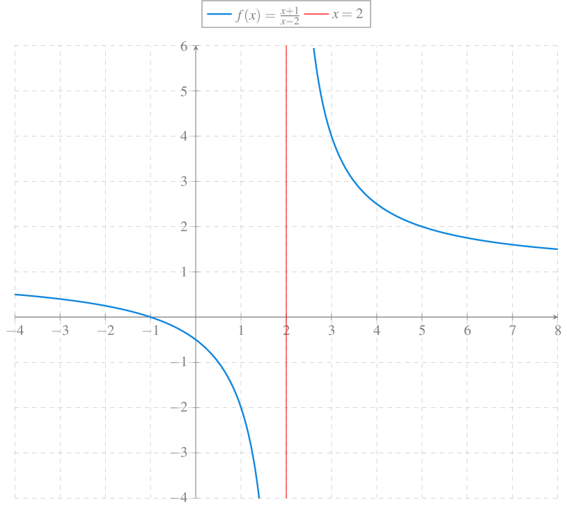
Asíntotas horizontales
Definición 11 (Asíntota horizontal) Se dice que una recta \(y=a\) es una asíntota horizontal de una función \(f\) si se cumple
\[\lim_{x\to +\infty}f(x)=a \quad \textrm{o} \quad \lim_{x\to \infty}f(x)=a\]
Ejemplo 29 La recta \(y=1\) es una asíntota horizontal de \(f(x)=\dfrac{x+1}{x-2}\) ya que
\[\begin{align*} \lim_{x\to -\infty}\frac{x+1}{x-2}&= \lim_{x\to -\infty}1+\frac{3}{x-2} = 1, \textrm{ y}\\ \lim_{x\to +\infty}\frac{x+1}{x-2}&= \lim_{x\to +\infty}1+\frac{3}{x-2} = 1. \end{align*}\]
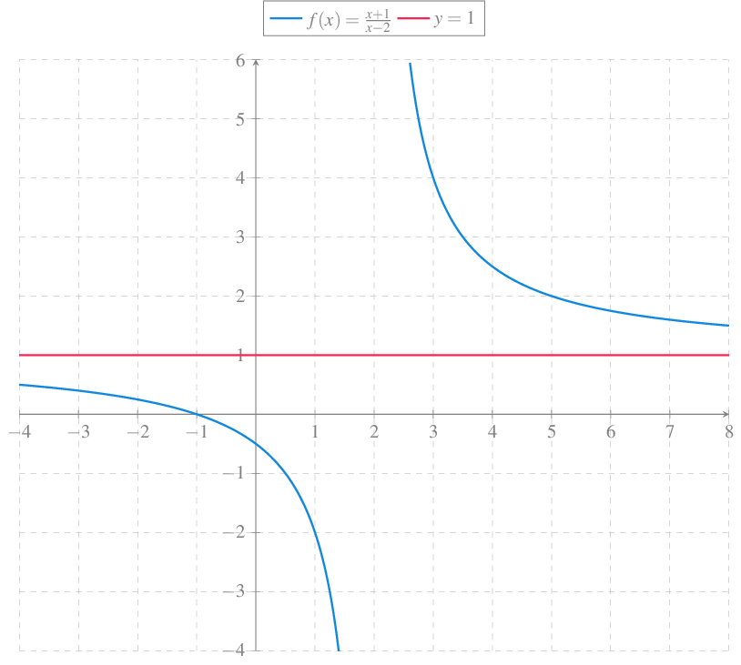
Asíntotas oblicuas
Definición 12 (Asíntota oblicua) Se dice que una recta \(y=a+bx\) es una asíntota oblicua de una función \(f\) si se cumple
\[\lim_{x\to \pm\infty}\frac{f(x)}{x}=b \quad \textrm{y} \quad \lim_{x\to \pm\infty}f(x)-bx=a.\]
Ejemplo 30 La recta \(y=x+1\) es una asíntota oblicua de \(f(x)=\dfrac{x^2}{x-1}\) ya que
\[\begin{align*} \lim_{x\to \pm\infty}\frac{\frac{x^2}{x-1}}{x}&= \lim_{x\to \pm\infty}\frac{x^2}{x^2-x} = 1, \textrm{ y}\\ \lim_{x\to \pm\infty}\frac{x^2}{x-1}-x &= \lim_{x\to \pm\infty}1+\frac{x}{x-1} = 1 \end{align*}\]
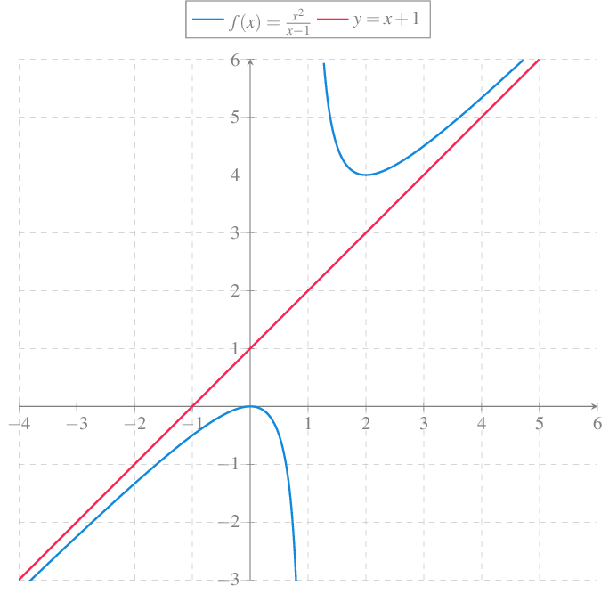
Continuidad
Definición 13 (Función continua en un punto) Dado un conjunto \(A\subseteq \mathbb{R}\), una función \(f:A\to \mathbb{R}\) y un punto de acumulación \(a\) de \(A\), se dice que la función \(f\) es continua en el punto \(a\) si
\[\lim_{x\to a}f(x)=f(a).\]
Ejemplo 31 La función \(f(x)=x^2\) es continua en \(2\) ya que \(\lim_{x\to 2}x^2 = 4 = f(2)\).
Definición 14 (Función continua en un intervalo) Dado un conjunto \(A\subseteq \mathbb{R}\) y una función \(f:A\to \mathbb{R}\), se dice que función \(f\) es continua en un intervalo \(I\subseteq A\), si lo es en cada uno de los puntos de \(I\).
De manera informal, se puede decir que una una función es continua en un intervalo, si puede dibujarse su gráfica en ese intervalo sin levantar el lápiz.
Ejemplo 32 La función constante \(f(x)=c\) es continua en todo \(\mathbb{R}\), ya que \(\lim_{x\to a}c = c = f(a)\) \(\forall a\in\mathbb{R}\).
La función identidad \(\operatorname{Id}(x)=x\) es continua en todo \(\mathbb{R}\), ya que \(\lim_{x\to a}x = a = \operatorname{Id}(a)\) \(\forall a\in\mathbb{R}\).
Del mismo modo, función \(f(x)=x^2\) es continua en todo \(\mathbb{R}\), ya que \(\lim_{x\to a}x^2 = a^2 = f(a)\) \(\forall a\in\mathbb{R}\),
Ejemplo 33 Veamos que la \(f(x)=\operatorname{sen}(x)\) es continua en todo \(\mathbb{R}\). Sea \(a\in\mathbb{R}\). Usando propiedades trigonométricas se tiene
\[\begin{align*} |\operatorname{sen}(x)-\operatorname{sen}(a)| &=|2\operatorname{sen}\left(\frac{x-a}{2}\right)\cos\left(\frac{x-a}{2}\right)| \\ &= 2|\operatorname{sen}\left(\frac{x-a}{2}\right)||\cos\left(\frac{x-a}{2}\right)| \leq 2\frac{|x-a|}{2}\\ &=|x-a|, \end{align*}\]
ya que \(\operatorname{sen}(x)\leq x\) \(\forall x\in\mathbb{R}^+\) y \(\cos(x)\leq 1\) \(\forall x\in\mathbb{R}\).
Así pues, para cualquier \(\varepsilon>0\) existe \(\delta=\varepsilon>0\) tal que si \(|x-a|<\delta=\varepsilon\), entonces \(|\operatorname{sen}(x)-\operatorname{sen}(a)|<|x-a|=\varepsilon\).
De aquí se puede deducir que todas las funciones trigonométricas son continuas en su dominio.
De la definición de continuidad se deducen tres condiciones necesarias para la continuidad:
- \(f(a)\in \operatorname{Dom}(f)\).
- Existe \(\lim_{x\to a}f(x)\).
- \(\lim_{x\to a}f(x)=f(a)\).
Si se rompe alguna de estas condiciones, se dice que la función presenta una discontinuidad en \(a\).
Tipos de discontinuidades
Dependiendo de la condición de continuidad que se rompa, existen distintos tipos de discontinuidades:
- Discontinuidad evitable.
- Discontinuidad de 1ª especie de salto finito.
- Discontinuidad de 1ª especie de salto infinito.
- Discontinuidad de 2ª especie.
Discontinuidad evitable
Definición 15 (Discontinuidad evitable) Se dice que una función \(f\) tiene una discontinuidad evitable en el punto \(a\) si existe el límite de \(f\) en \(a\) pero \(\displaystyle \lim_{x\to a}f(x)\neq f(a)\).
Ejemplo 34 La función \(f(x)=\dfrac{x^2-1}{x-1}\) tiene una discontinuidad evitable en \(x=1\) ya que la función no está definida en \(x=1\) pero
\[\lim_{x\to 2}\frac{x^2-1}{x-1} = \lim_{x\to 2}x+1=2.\]
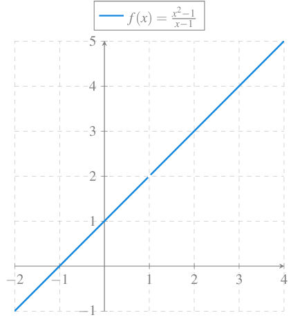
Discontinuidad de 1ª especie de salto finito
Definición 16 (Discontinuidad de 1ª especie de salto finito) Se dice que una función \(f\) tiene una discontinuidad de 1ª especie de salto finito en el punto \(a\) si existen los límites laterales de \(f\) en \(a\) pero
\[\lim_{x\to a^-}f(x)\neq \lim_{x\to a^+}f(x).\]
A la diferencia entre ambos límite se le lama salto de la discontinuidad.
Ejemplo 35 La función \(f(x)=\dfrac{\lvert x\rvert}{x}\) tiene una discontinuidad de 1ª especie de salto finito en \(x=0\) ya que
\[ \lim_{x\to 0^-}\frac{|x|}{x}= -1 \quad \lim_{x\to 0^+}\frac{|x|}{x}= 1 \]
Salto \(= 1-(-1)=2\).
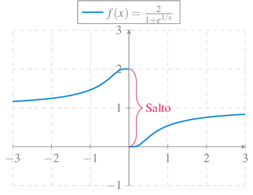
Discontinuidad de 1ª especie de salto infinito
Definición 17 (Discontinuidad de 1ª especie de salto infinito) Se dice que una función \(f\) tiene una discontinuidad de 1ª especie de salto infinito en el punto \(a\) si
\[\lim_{x\to a^-}f(x)=\pm\infty \quad \textrm{o} \quad \lim_{x\to a^+}f(x)=\pm\infty.\]
Si \(f\) tienen una discontinuidad de 1ª especie de salto infinito en un punto \(a\), entonces \(f\) tienen una asíntota vertical \(x=a\).
Ejemplo 36 La función \(f(x)=e^{1/x}\) tiene una discontinuidad de 1ª especie de salto infinito en \(x=0\) ya que
\[ \lim_{x\to 0^-}e^{1/x}= 0 \quad \lim_{x\to 0^+}e^{1/x}= \infty \]
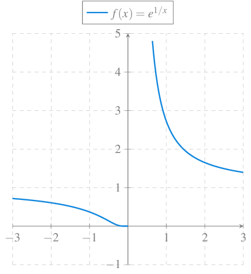
Discontinuidad de 2ª especie
Definición 18 (Discontinuidad de 2ª especie) Se dice que una función \(f\) tiene una discontinuidad de 2ª especie en el punto \(a\) si no existe alguno de los límites laterales y tampoco se trata de una discontinuidad de 1ª especie de salto infinito.
Normalmente la discontinuidades de 2ª especie se dan en puntos donde la función no definida en sus proximidades.
Ejemplo 37 La función \(f(x)=\dfrac{1}{\sqrt{x^2-1}}\) tiene una discontinuidad de 2ª especie en \(x=1\) ya que
\[ \lim_{x\to 1^-}\frac{1}{\sqrt{x^2-1}} \textrm{ no existe} \quad \lim_{x\to 1^+}\frac{1}{\sqrt{x^2-1}}=\infty \]
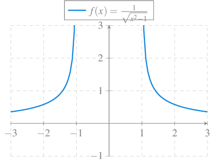
Proposición 14 Dado un conjunto \(A\subseteq \mathbb{R}\), dos funciones \(f,g:A\to \mathbb{R}\) y un punto de acumulación \(a\) de \(A\), si \(f\) y \(g\) son continuas en \(a\), entonces
- \(f\pm g\) es continua en \(a\).
- \(f\cdot g\) es continua en \(a\).
- \(cf\) es continua en \(a\) \(\forall c\in\mathbb{R}\).
- \(\frac{f}{g}\) es continua en \(a\) si \(g(x)\neq 0\) \(\forall x\in\mathbb{R}\).
Ejemplo 38 El polinomio \(p(x)=2x^2-x+3\) es continuo en todo \(\mathbb{R}\) ya que las funciones \(f(x)=x^2\), \(g(x)=x\) y \(h(x)=3\) son continuas en todo \(\mathbb{R}\).
De hecho, se puede demostrar de manera similar que cualquier polinomio es continuo en todo \(\mathbb{R}\).
Proposición 15 Dados dos conjuntos \(A,B\subseteq \mathbb{R}\), dos funciones \(f:A\to \mathbb{R}\), \(g:B\to \mathbb{R}\) tales que \(f(A)\subseteq B\) y un punto de acumulación \(a\) de \(A\), si \(f\) es continua en \(a\) y \(g\) es continua en \(f(a)\), entonces \(g\circ f\) es continua en \(a\).
Ejemplo 39 Sea \(f(x)=\frac{1}{x}\), que es continua en \(\mathbb{R}\setminus\{0\}\) y \(g(x)=\cos(x)\) que es continua en todo \(\mathbb{R}\). Entonces \(g\circ f(x)=\cos\left(\frac{1}{x}\right)\) es continua en \(\mathbb{R}\setminus\{0\}\), mientras que \(f\circ g(x)=\frac{1}{\cos(x)}\) es continua en \(\mathbb{R}\setminus\{(2k+1)\pi/2: k\in\mathbb{Z}\}\).
Funciones continuas en intervalos
Teorema 9 Dado un intervalo cerrado y acotado \(I=[a,b]\), y una función \(f:I\to\mathbb{R}\), si \(f\) es continua en \(I\), entonces \(f\) está acotada en \(I\).
Ejemplo 40 La función
\[ f(x)= \begin{cases} \frac{1}{x} & \mbox{si } x\in (0,1]\\ 0 & \mbox{si } x=0 \end{cases} \]
no está acotada en el intervalo \([0,1]\), luego no es continua en este intervalo.
Teorema 10 Dado un intervalo cerrado y acotado \(I=[a,b]\), y una función \(f:I\to\mathbb{R}\), si \(f\) es continua en \(I\), entonces \(f\) alcanza el máximo y el mínimo en \(I\), es decir, existen \(c,d\in I\) tales que \(c\leq f(x)\leq d\) \(\forall x\in I\).
Teorema 11 (Bolzano) Dado un intervalo cerrado y acotado \(I=[a,b]\), y una función \(f:I\to\mathbb{R}\), si \(f\) es continua en \(I\), y \(f(a)<0<f(b)\), entonces existe \(c\in(a,b)\) tal que \(f(c)=0\).
Teorema 12 (Valores intermedios) Dado un intervalo cerrado y acotado \(I=[a,b]\), y una función \(f:I\to\mathbb{R}\), si \(f\) es continua en \(I\) y si \(c,d\in I\), entonces para cualquier \(k\in \mathbb{R}\) con \(f(c)<k<f(d)\), existe \(e\in I\) entre \(c\) y \(d\) tal que \(f(e)=k\).
Teorema 13 Dado un intervalo cerrado y acotado \(I=[a,b]\), y una función \(f:I\to\mathbb{R}\), si \(f\) es continua en \(I\) y \(k\in\mathbb{R}\) es tal que \(\inf(f(I))\leq k\leq \sup(f(I))\), entonces existe \(e\in I\) tal que \(f(e)=k\).
Teorema 14 Dado un intervalo cerrado y acotado \(I=[a,b]\), y una función \(f:I\to\mathbb{R}\), si \(f\) es continua en \(I\) entonces \(f(I)\) es un intervalo cerrado y acotado.